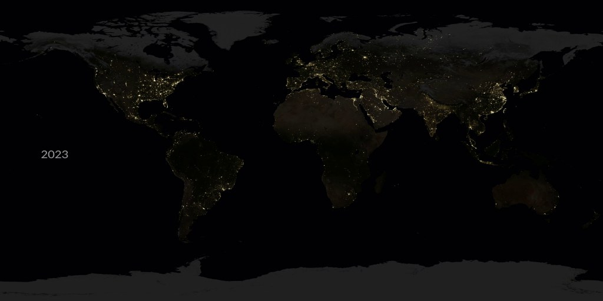
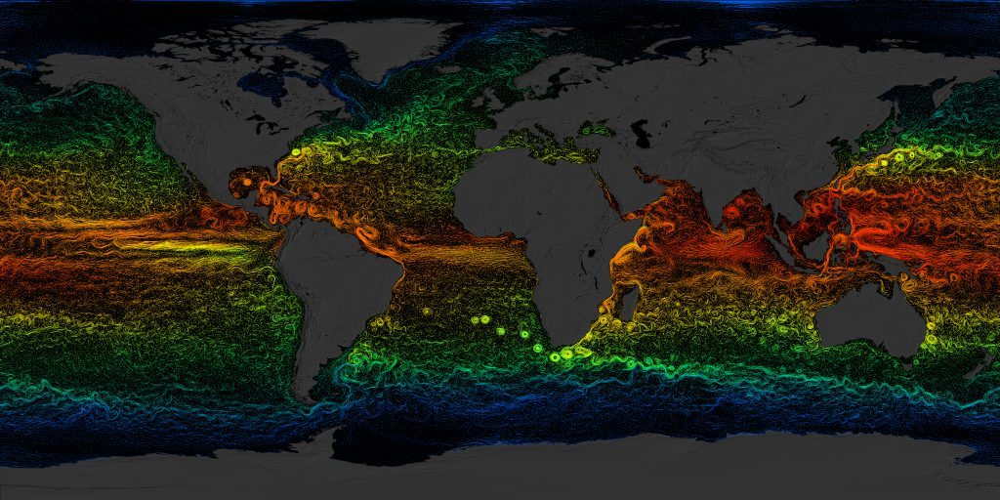
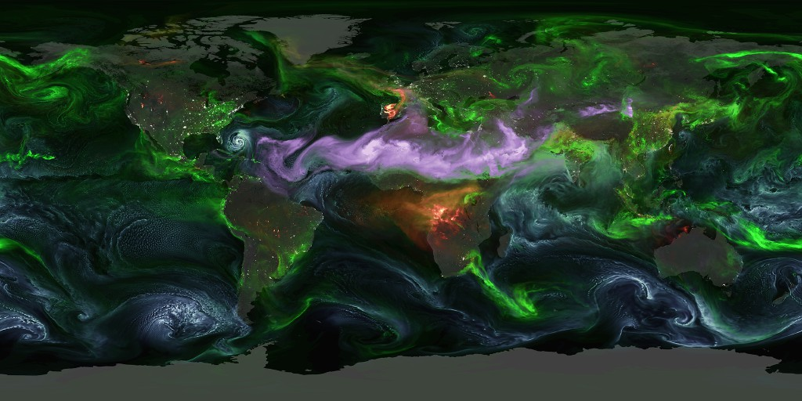
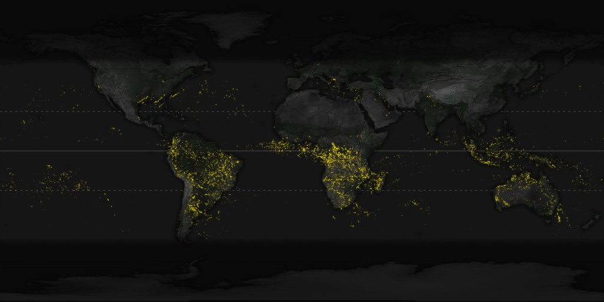
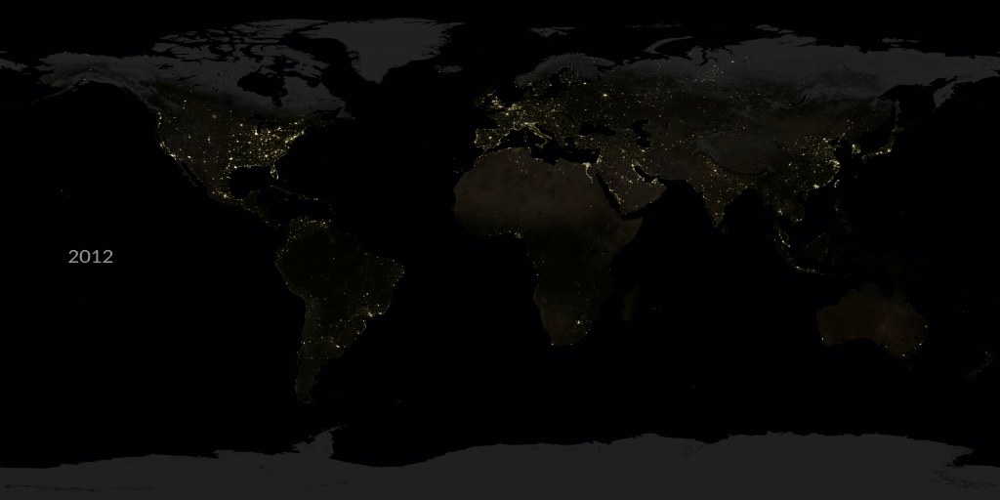

Hear NASA's Earth maps.
NASA's maps of the planet, played as music made to be read by ear. Built for people who cannot see the picture.
Team USV.
2026 NASA Space Apps Challenge, Charlotte. Challenge: The Earth Information Jukebox.
NASA's maps of the planet, played as music made to be read by ear. Built for people who cannot see the picture.
Team USV.
2026 NASA Space Apps Challenge, Charlotte. Challenge: The Earth Information Jukebox.

NASA's Earth Information Center shows a changing planet on a wall of screens. If you cannot see the screen, you get a caption, or nothing.
28,000
people in Charlotte are blind or have serious difficulty seeing, even with glasses.
43 million
people worldwide are blind, and 295 million more have moderate or severe vision impairment.
US Census Bureau, American Community Survey 2024, table B18103 (Charlotte; 8.6 million across the United States). Worldwide figures for 2020: GBD 2019 Blindness and Vision Impairment Collaborators, The Lancet Global Health, 2021.



Five Earth Information Center visualizations, plus rain, smoke, haze and sea temperature fetched from NASA for the newest day. The sound is computed in the browser the moment you press play.
Press "Play all 12 in order" and twelve years of night lights play in under a minute at one shared volume. Then Earshot says what changed, worked out from the numbers:
"From 2012 to 2023, light at night rose across the map as a whole. The largest rise was over the Indian subcontinent."

or better. A second program is given only the audio and rebuilds the map. That is its match with the original on every record tested.
of geography tasks were completed by seven blind users of a sound map with a sweep, speech and keyboard exploring, against 33% with a spreadsheet (Zhao and others, 2008). That tool carried values in pitch; Earshot uses the same sweep, speech and keyboard, with loudness and brightness.
of data pixels on the day-by-day maps match NASA's own colour table exactly, so no value is guessed.
Use of AI: an AI assistant (Claude) researched, proposed approaches and wrote most of the code and text, including these slides, under the team's direction. No image, video or sound was made by generative AI. Every sound is computed from NASA data. Pictures are NASA's, from the Scientific Visualization Studio. Earshot is not made or endorsed by NASA.